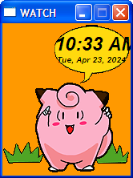
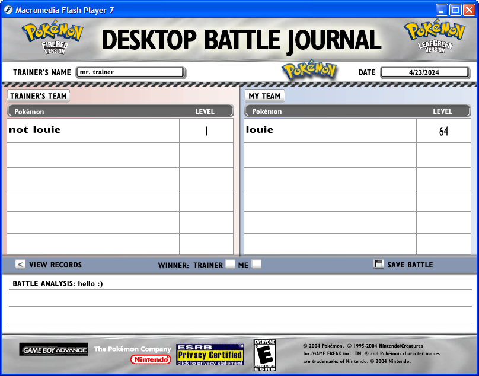

Pokémon Widgets

Clefairy Widget/Clock
A Clefairy that can either dance around or act as a clock, which can be toggled by clicking on it.

DOWNLOAD
 .exe file zipped (1.78 MB)
.exe file zipped (1.78 MB)
Pokémon FireRed and LeafGreen Desktop Journal
A journal you can use to track your progress in Pokémon FireRed and LeafGreen.

DOWNLOAD
.exe file zipped (755 KB)